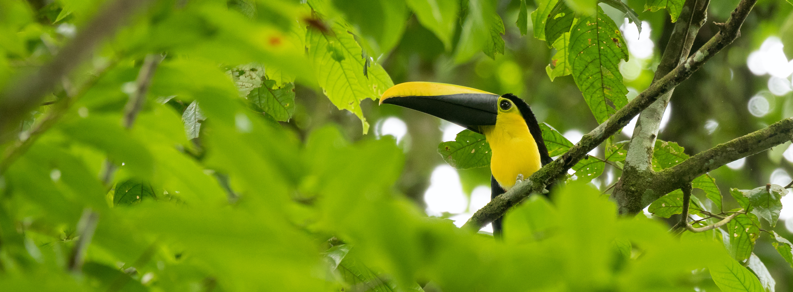
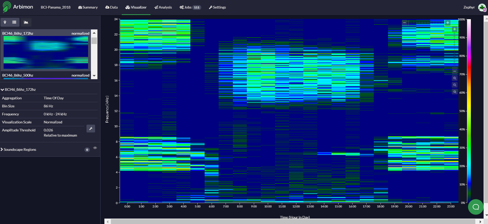
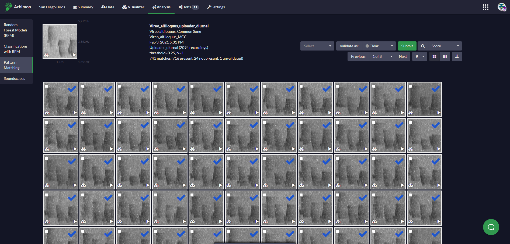
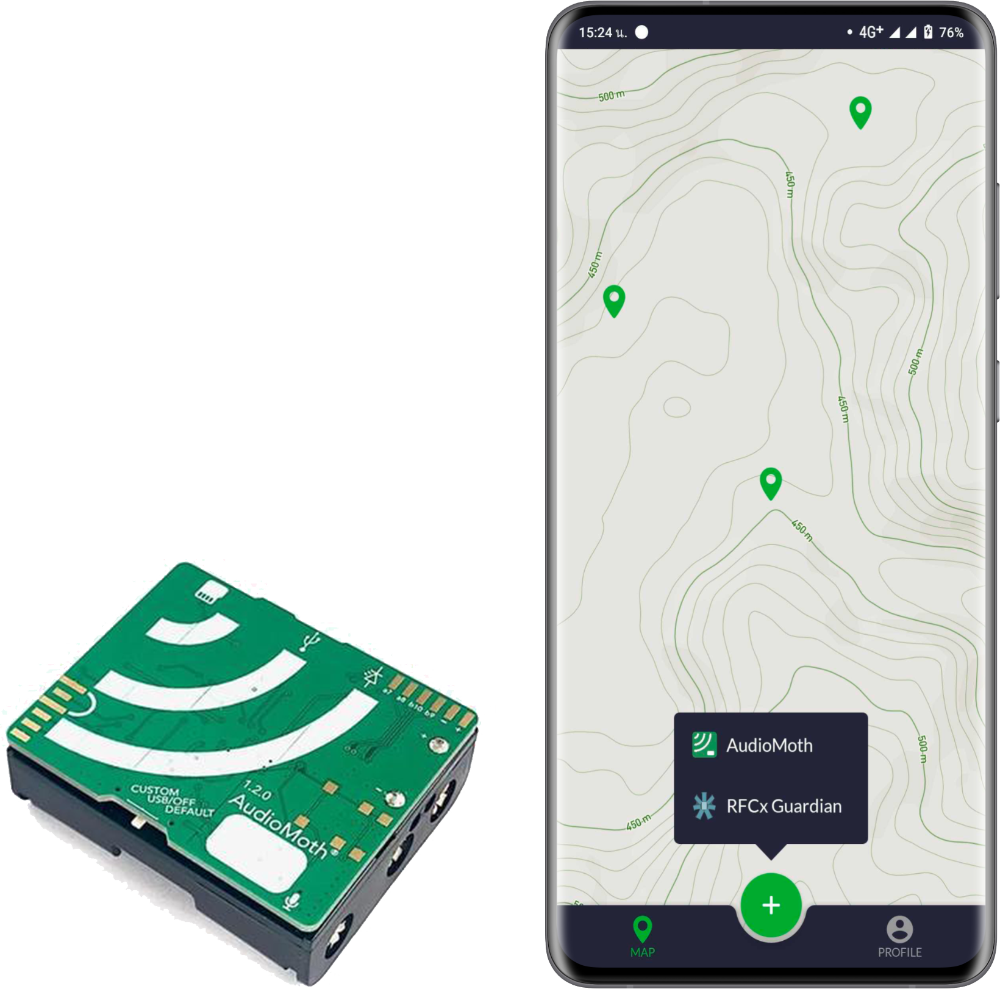
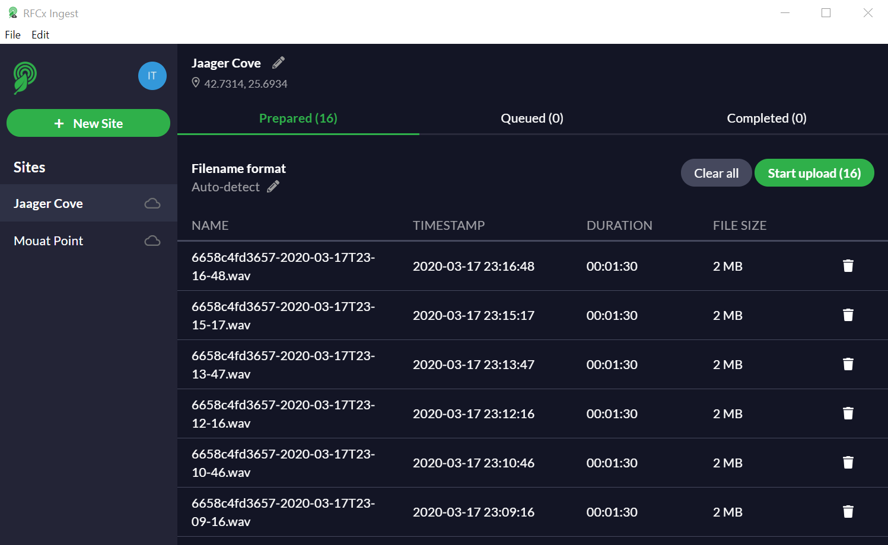

biodiversity monitoring
Rainforest Connection is dedicated to supporting the bioacoustics & ecoacoustics communities with tools and
technology to increase your overall impact in the conservation space.

Rainforest Connection® Arbimon
With the recent launch of Arbimon you can now upload and analyze an unlimited amount of audio from your
AudioMoth and other devices.
get started now


Includes:
- Visualizer - an intuitive viewer to review spectrograms, listen to recordings, and annotate audio.
- Soundscapes - aggregate recordings at different temporal and spatial scales.
- Pattern matching species identification - automatically search your audio library for a matching spectrogram.
- Data organization - create playlists by site, time of day, detected species, soundscapes, and tags.

Rainforest Connection® Companion
Deploying AudioMoths in the field? Use the Companion to simplify the management of multiple devices.
- Manage, track and deploy AudioMoths from your Android phone
- Recordings will be automatically linked to deployment geo-location (using Uploader)
- Attach photos to your device deployment location to mark where you left it

Rainforest Connection® Uploader
A desktop tool for uploading to Arbimon.
- Auto-detect file timestamp formats - supports commonly used bioacoustic devices (SongMeter, AudioMoth, Swift and others)
- Background uploading - continue to do analysis in Arbimon while uploading in the background
- Resumable - take a break from uploading and resume at a later time without losing a recording

Need help getting started? Visit our support site.
Rainforest Connection® Software Development Tools
Designed for scientists to connect with the Rainforest Connection platform to build their own ecoacoustic tools for protection and conservation.